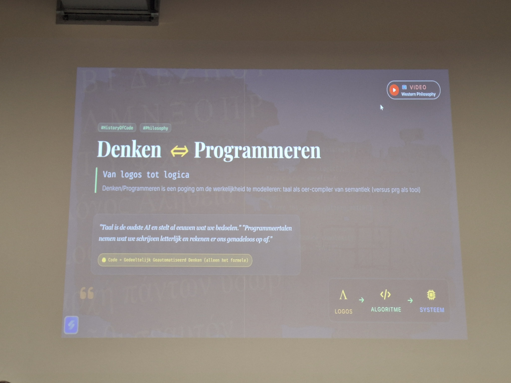

I took part in Hack The Future 2025 - Aquatopia, a hackathon for IT and creative students in Antwerp.
Read
My team took on the challenge “Lost in the Deep: Code expedition to Atlantis”.
Our team is the crew of a submarine that received a distress call from Atlantis.
It consisted some interesting and fun smaller challenges, from decrypting a cipher
sent via an API to calculating the internal pressure after a submarine broke apart.
Learning about the transition to IPv6 and its importance
Read
I went to a “Tech&Meet” lecture at Howest university about transitioning to IPv6 by Nico Declerck.
We learned about the importance of transitioning to IPv6, some history of IPv4 and IPv6, and how it can be achieved.
Learning about Deepseek and its influence
Read
I went to a “Tech&Meet” lecture at Howest about Deepseek and its impact by Dimitri Casier.
We learned about how Deepseek is very innovative with its focus on doing more with less power, open source versus closed source LLMs, and the story of AI in world politics.
Beginnings of my blog
I started working on the blog section of my e-portfolio.
Read
I thought carefully about how I wanted to design this blog.
I came up with a few simple principles for the design:
Keep it simple - posts are written and edited in HTML.
Since this blog will only be updated a few times per month, an additional abstraction felt unnecessary.
Keep it clear - posts are easy to scan and expand using
<details>. For longer articles, a separate page can be used.
Make posts easy to share - each post has a “Copy link” button
that points directly to the post.
Learning about the history of IT
Read
I went to another “Tech&Meet” lecture at Howest about the history of how information is processed - from abstract thinking to logic, machines, and programming by Luc Vervoort and Wim Delvaux.
We also learned about several key moments in computing history that took place - from the first calculator, the first programmable computer, to the internet, and machine learning. It was an interesting talk!

Beginnings of my blog
I started working on the blog section of my e-portfolio.
Read
I thought carefully about how I wanted to design this blog.
I came up with a few simple principles for the design:
Keep it simple - posts are written and edited in HTML.
Since this blog will only be updated a few times per month, an additional abstraction felt unnecessary.
Keep it clear - posts are easy to scan and expand using
<details>. For longer articles, a separate page can be used.
Make posts easy to share - each post has a “Copy link” button
that points directly to the post.
Learning about a day in the life of blue & purple team engineers
Read
I recently attended another “Tech&Meet” lecture at Howest on what it’s like to work as a blue and purple team engineer in cyber security. Two professionals from Easi - one from the blue team and one from the purple team - provided insight into their daily work and schedules.
Although I study software engineering and aspire to a career in that field, I found it fascinating to learn more about their approach to detecting, responding to and neutralising cyber threats. They also gave us a glimpse into some of the tools they use.